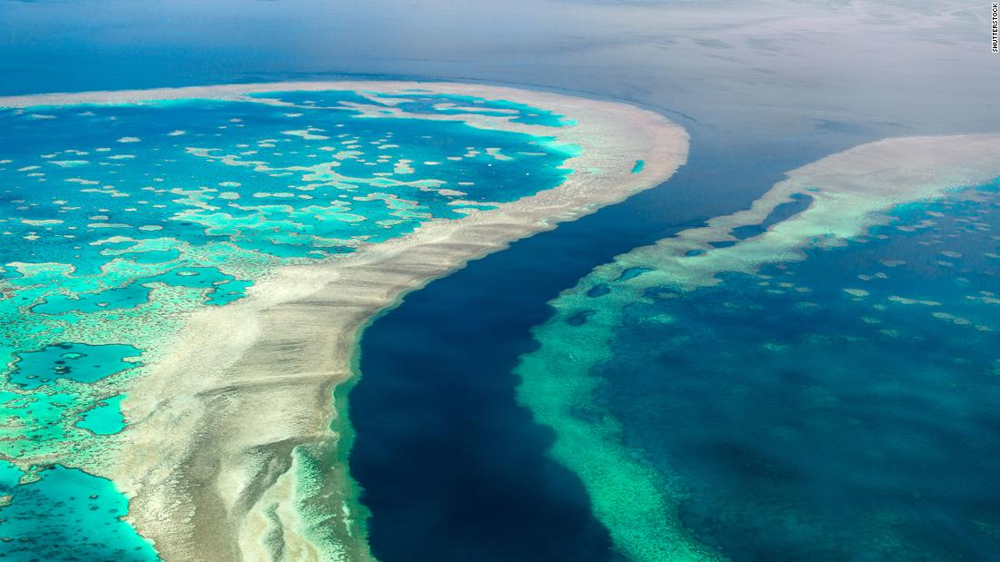
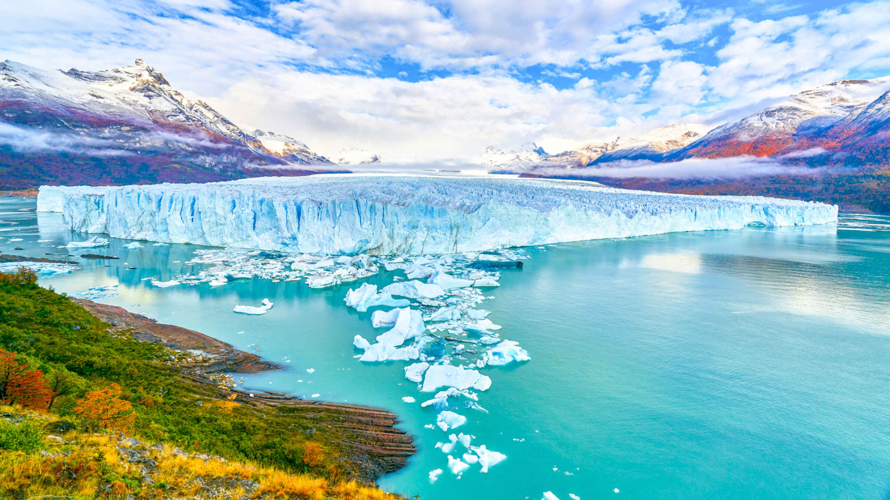
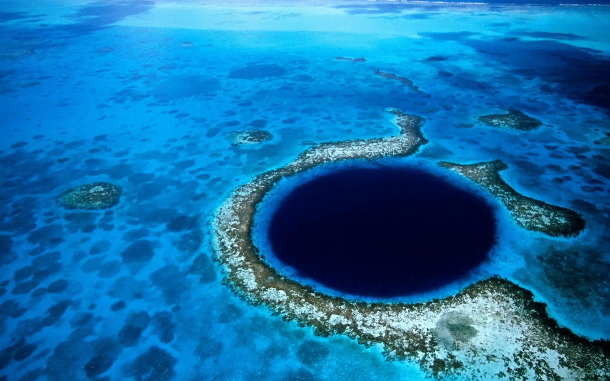
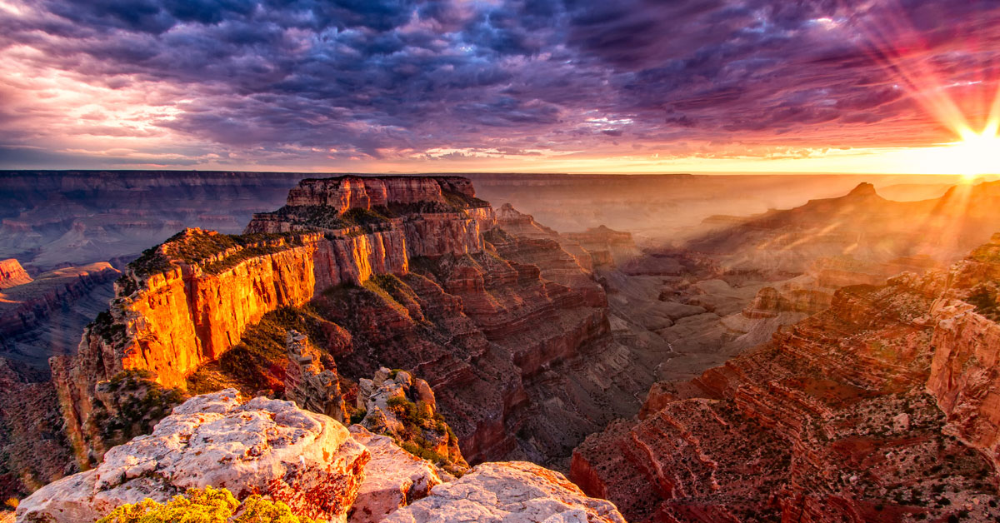
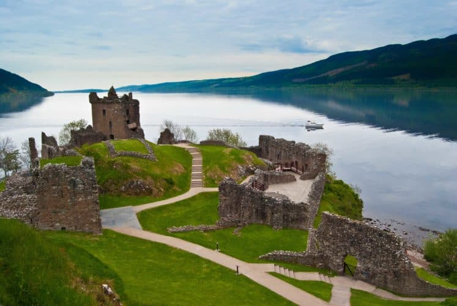

<!DOCTYPE html>

<html>
	<head>

		<title>
		La Gran Barrera de Coral
		</title>
		<meta http-equiv="Content-Type" content="text/html; charset=utf-8"/>
	</head>
</html>

<h1> La Gran Barrera de Coral </h1>
<p></p>

<body bgcolor= #b2c8eb>
<p align="center"><font size= "4" color= "black"><i>Australia</i></p>

<link rel="stylesheet" type="text/css" href="../css/estilos.css" media="screen">

<body>
<h2> Localización </h2>
<p>Resulta difícil delimitar la extensión exacta de la Gran Barrera de Coral, aunque se considera que comienza cerca de la latitud 9°S, al sur de Papúa Nueva Guinea,​y sigue hacia el sureste hasta la latitud 24°S, la mayor parte como una línea paralela a la costa meridional de Queensland. </p>

<p>Tampoco <b>se trata de una línea continua de arrecife</b> , sino que está formado por más de 2000 arrecifes individuales y casi 1000 islas.</p>

<p>La Gran Barrera de Coral es una característica distintiva de la Gran Cordillera Divisoria. Se extiende desde el estrecho de Torres (entre Cayo Bramble, su isla más septentrional, y la costa sur de Papúa Nueva Guinea) en el norte hasta el pasaje entre la isla Lady Elliot (su punto más meridional) y la isla Fraser en el sur. La isla Lady Elliot se encuentra a 1 915 km al sureste del Cayo Bramble en línea recta.4​ Incluye también las más pequeñas islas Murray.</p>
<p><a href="https://goo.gl/maps/KxA7FBBwVyTcpwrc9"></a></p>
<h2> Origen </h2>
<p>​La teoría de la tectónica de placas indica que Australia se ha movido hacia el norte a un ritmo de 7 cm por año, comenzando durante el Cenozoico. El este de Australia experimentó un período de elevación tectónica, que movió la divisoria de aguas en Queensland 400 km tierra adentro. También durante este tiempo, Queensland experimentó erupciones volcánicas que condujeron a volcanes centrales y de escudo y flujos de basalto.</p>
<h2> Amenazas </h2>
<ul>
	<li><b>Polución</b>:Otra amenaza clave que enfrenta la Gran Barrera de Coral es la contaminación y la disminución de la calidad del agua. Los ríos del noreste de Australia contaminan el arrecife durante las inundaciones tropicales.</li>
	<li><b>Cambio climático</b>:La Gran Barrera de Coral se ha visto afectada por el calentamiento global que aumenta cada vez más. Los corales son especies muy sensibles a los cambios de temperatura del océano. </li>
	<li><b>Estrellas de mar</b>:Las estrellas de mar corona de espinas se alimentan de pólipos de coral. Los grandes brotes de estas pueden devastar los arrecifes.</li>
</body>

<table border="5" class="center">
<tr>

<td>
		<p><a href = '../index.html'><figcaption style = 'text-align:center'>Inicio</figcaption ></a></p>
	</td>
	<td>
		<p><a href = '../html/glacialperitomoreno.html'><figcaption style = 'text-align:center'>Glacial Perito Moreno</figcaption></a></p>
	</td>

	<td>
		<p><a href = '../html/elgranagujeroazul.html'><figcaption style = 'text-align:center'>El Gran Agujero Azul</figcaption></a></p>
	</td>

</tr>
<tr>
	<td>
		<p><a href = '../html/elgrancañon.html'><figcaption style = 'text-align:center'>El Gran Cañon</figcaption></a></p>
	</td>
	
	<td>
		<p><a href = '../html/ellagoness.html'><figcaption style = 'text-align:center'>El Lago Ness</figcaption></a></p>
	</td>
	<td>
		<p><a href = '../html/cataratasdeliguazu.html'><figcaption style = 'text-align:center'>Cataratas del Iguazú</figcaption></a></p>


	</td>
</tr>

</table>